语音合成
Text → Waveform
目录
从发展历史，目前的主流tts方案，关键组件详解，以及CosyVoice方案四个角度进行介绍。
发展历程
四十年里，TTS 换过三次「音频表示」，每次换代都带来一次自然度跃迁。
- 机械装置与共振峰合成
- 拼接合成与 HMM 统计参数
- 神经网络与 Codec LM
- 各时代生成效果对比试听
- 三层坐标系：数据 / 表示 / 还原
主流方案
三条路线的分歧点只有一个：谁来负责生成细粒度声学信息。
- 纯 Codec + LM（VALL-E）
- 纯 Diffusion（F5-TTS）
- 混合方案（CosyVoice）
- 五维对比：韵律 / 稳定性 / 流式 / 开销 / 可控性
- 可交互总架构图
组件详解
把总架构图拆开，逐个讲清每个模块在做什么、怎么训、代价多少。
- Codec 三种训练目标
- RVQ-VAE 残差量化与 bitrate
- 语义 token vs 声学 token
- Mel 谱与 Flow Matching
- DiT 架构与 Vocoder
CosyVoice
公司在用的模型：CosyVoice 论文精读，架构落地 + 推理阶段拆解。
- 整体架构预览
- 文本-语音 LM 推理：非流式 / 流式 / SFT
- Chunk-aware 流匹配推理：非流式 / 流式
- 四种因果掩码，一份权重
TTS 是「一对多」问题
TTS 与 ASR 看似只是输入输出反过来，但难度结构完全不同。 ASR 类似分类任务；TTS类似生成任务。
目标唯一 → 有 WER 这种客观指标可优化
全都同样正确 → 没有唯一答案，这是生成式建模的难题
评估难
没有 WER 这种客观指标，只能用 MOS（Mean Opinion Score）让人打分。
训练目标含糊
直接对 mel 谱做 L2 回归，模型会输出「所有可能读法的平均」——过平滑，听起来含混发闷。
可控性要求高
业务上要指定说话人、情感、语速、停顿，这要求模型把「内容」与「风格」解耦。
手工时代：三条路，各让一步
共振峰、拼接、HMM 三种方案在音质 / 灵活度 / 体积上各占一角，谁都补不齐另两角。 真正的共同局限不在音质，而在整条流水线全靠手工设计。
共振峰合成
KlattTalk → DECtalk (1984)
不录任何真人音频。用规则和公式直接生成声源，再过一组共振峰滤波器塑造音色——本质是「用数学描述声道」。
机械感极重，一听就是机器。每个音的参数都要人手工调。
脉冲串 / 噪声
中心频率＝手工参数
无一帧真人录音
没有任何音频素材：声源经一组人工设定中心频率与带宽的滤波器塑出共振峰结构，是纯数学对声道的近似。
拼接合成
Festival (爱丁堡 CSTR) · MS SAPI
录一个真人几十小时的音素级语音库，合成时从库里挑最合适的片段拼起来。音质接近真人——因为它本来就是真录音。
换发音人要重录整个库；拼接边界不平滑；无法表达库里没有的情感。
拼接处波形振幅、相位突然跳变——那一声「咔嗒」的来源。换情绪或换发音人，等于要重录整个库。
HMM 参数合成
至今仍见于嵌入式设备
不存音频，只存参数：把语音拆成基频 F0 + 频谱 + 时长三组，用 HMM 建模它们随音素的演化。
vocoder 还原出的语音机械感重（正是 P03 说的过平滑）。
训练目标是让预测逼近所有训练样本的平均——细节被平均掉，vocoder 还原出的语音因此发闷、机械。
神经网络吃掉声学建模：五年里少了四个手工模块
这一代的每一步都在解决上一步留下的代价：Tacotron + WaveNet 打通了两段式但都慢、attention 还会崩 → FastSpeech 并行提速但要外部对齐 → VITS 干脆把两段缝成一个模型。
Tacotron + WaveNet
两段式神经流水线
两者是互补的两半，不是竞争关系：Tacotron 用 attention seq2seq 做「文本 → mel 谱」，WaveNet 用因果空洞卷积做「mel 谱 → 高质量波形」。合起来第一次让整条 pipeline 端到端可训。
WaveNet 逐采样点自回归极慢（16 kHz = 每秒 16000 次预测）；Tacotron 的 attention 会崩——跳帧、漏字、重复。
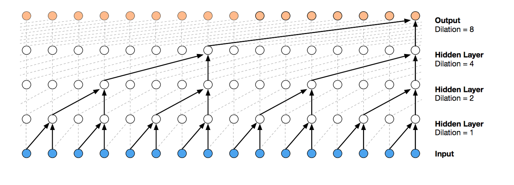
FastSpeech + HiFi-GAN
用显式 duration predictor 替代 attention：预测每个音素占多少帧，再展开成整段 mel 并行生成。
duration 标签靠外部对齐（教师模型或 MFA）。
每个音素预测出固定帧数，长度调节器直接展开成整段 mel——一次前向并行产出全部帧，不必等前一帧算完。270× 加速仅指 mel 生成，端到端含声码器约 38×。
VITS
Flow + MAS + GAN 解码器
彻底统一：取消 mel 中间表示，文本直接产出波形。
单阶段训练、单模型部署，但以单说话人为主——零样本克隆还要等下一代。
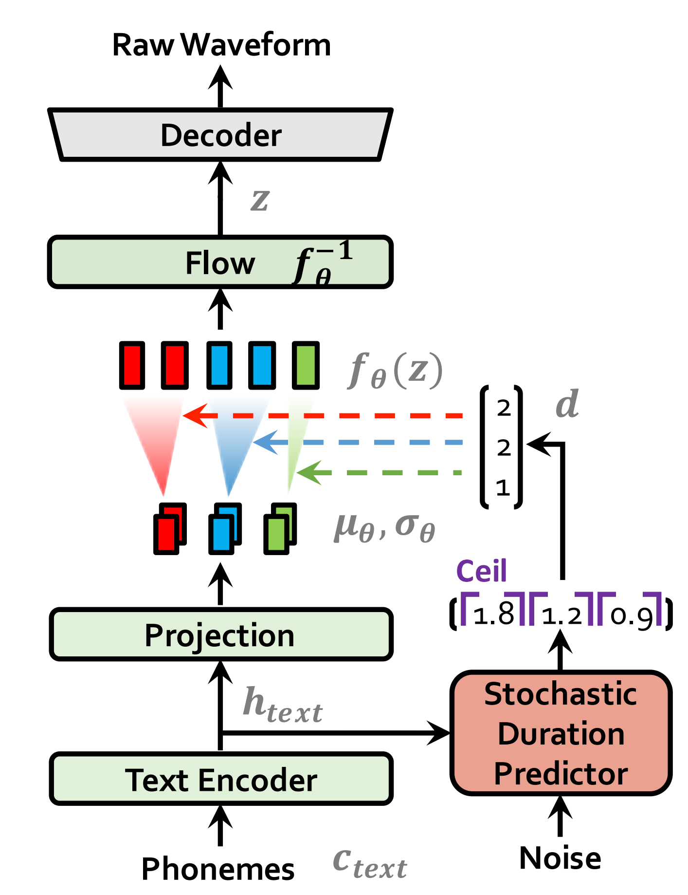
生成式大模型重定义问题：音频成了一种 token
VALL-E 做的不是提升音质，而是换了问题的提法——把 TTS 变成「codec token 上的语言建模」。 这一步让 TTS 接上 NLP 主线，白拿整个 LLM 时代的工程红利。
VALL-E
60k 小时 LibriLight
用 Encodec 把音频离散成 token，再训 GPT 式自回归 Transformer：输入「3 秒参考音频 codec + 目标文本音素」，输出目标音频 codec token。
token 逐个解码慢；仍需音素作为条件。
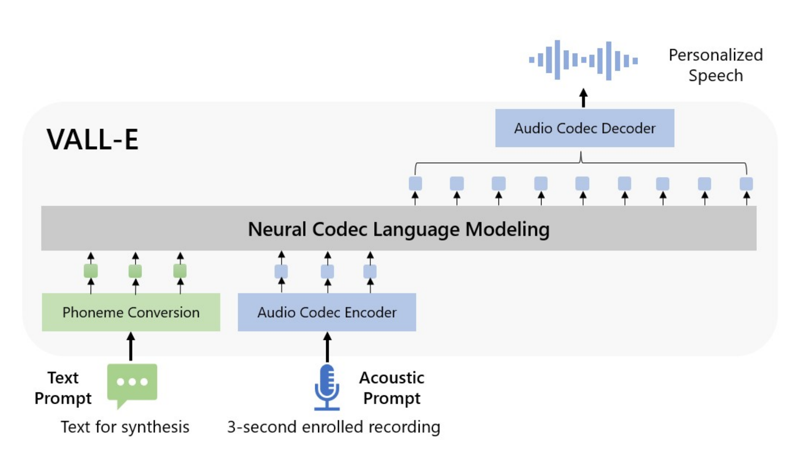
E2-TTS
F5-TTS
Flow Matching + DiT
针对 codec LM 的两个软肋：AR 慢、依赖外部对齐。E2 把训练变成音频填空——挖洞补全，文本只是另一个条件，于是彻底不要音素对齐、时长预测和 G2P 字典。
训练数据需求大。
学的是连续时间下的速度场 v(x,t)，用 ODE 求解器替代 diffusion 的 SDE——步数从千级压到十几步。
CosyVoice 2 → 3
← 公司在用的模型
v2 定下三段式骨架：LM 生成有监督语义 token（取自 ASR，非音素）→ Flow Matching 转 mel → HiFi-GAN 出波形。兼得 LM 的可控性与 flow 的音质。
v3 补齐 v2 的语种覆盖、数据量与后训练短板：数据 1 万 → 100 万小时，参数 0.5B → 1.5B。第四部分整章详拆。
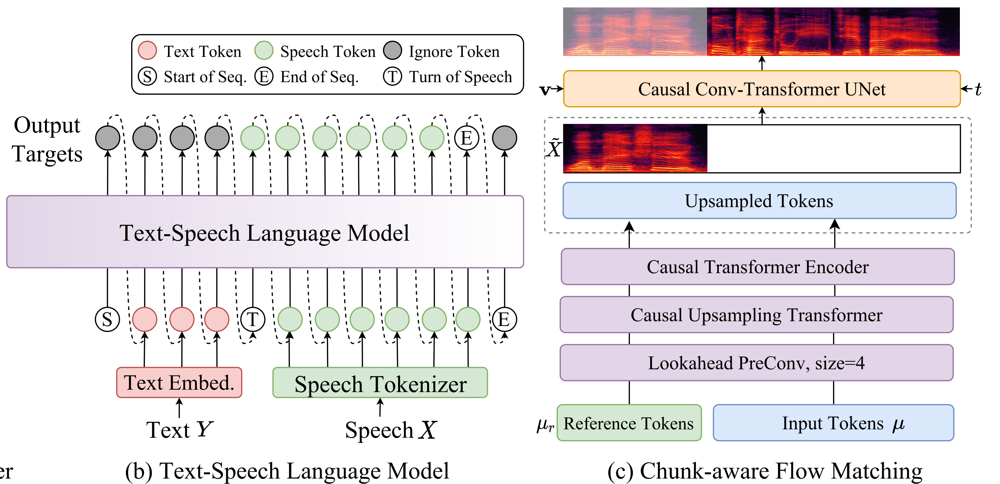
Qwen3-TTS
500 万小时 · 10 语种
改用双轨 LM（dual-track）做实时合成，并同时给出两个 tokenizer 走不同取舍：25 Hz 单码本偏语义、12.5 Hz 十六层多码本压极限码率。
3 秒克隆之外还支持用自然语言描述来设计音色，不只是复刻已有声音。
同一模型给出两套码率完全不同的 tokenizer，让上层按延迟预算选 —— 帧率与码本层数的取舍正是第三部分 Codec 的核心议题。
音质早已触顶
MOS 停在 4.4–4.5 已经七八年。2018年的 Tacotron2 和 2024年的 CosyVoice2 在朗读式数据上听感差异很小。真正的进步换了赛道。
各数值取自不同论文的自报值，数据集、评分人群、年份均不同，不可横向比较。此处只用来看趋势，不用来排名。
选型判断：业务只要「文本 → 单一标准发音人朗读」的话，2018 年的 Tacotron 2 + HiFi-GAN 依然完全够用。 上 F5 / CosyVoice 买的是上面这四项新能力。追求的不是更高的音质，而是拟人的感觉。
三条路线，同一张图
头尾完全一样：进去是文本 + 参考语音，出来是波形。分歧只在于中间表示如何建模。
不引入离散 token
trade-off 整段 Mel 一次并行生成，本质是音频填空。没有 LM 就不会漏字重复；代价是总时长必须先估出来，不适合流式。
没有 Mel，没有扩散
trade-off 全程离散 token，TTS 变成「下一个 token 预测」，直接复用 LLM 家当。代价是声学 token 承担了全部信息，8 层码本要分两个模型接力，自回归易漏字、重复。
五个阶段全走一遍
trade-off 分工：LM 只管说什么（语义 token，可流式），音色交给 CFM。参考语音走两条路：语义 token 进 LM，Mel 谱旁路直接注入 CFM。代价是三段级联，误差沿链条累积。
Codec 是什么？
Codec可以抽象理解为音频的压缩 + 还原：用更少的数据表示同一段音频，再还原回来。中间的压缩表示是重点。
| 维度 | 经典 codec（压缩算法，如：Opus） | Neural codec（Encodec） |
|---|---|---|
| 输出形式 | 变长比特流 | 固定时步的整数 token |
| 核心方法 | 心理声学 + 熵编码 | RVQ-VAE 端到端学习 |
| 设计目标 | 最小比特率 / 高听感 | 低帧率 / 易被 LLM 建模 |
| 典型比特率 | 6–24 kbps | 1.1–24 kbps |
| 是否可微 | 否 | 是，可与上层模型联合训练 |
| 典型用途 | VoIP / 流媒体 / 本地播放 | VALL-E / Moshi / CosyVoice |
为什么传统 codec 方案没法用于 LM
- 长度随内容变化
- 没有固定词表
- 帧率固定
- 词表固定
无监督 codec 共用同一个数学骨架
主流无监督 codec 都是基于 RVQ-VAE，关键参数是码本数量K、码本大小V，帧率f。
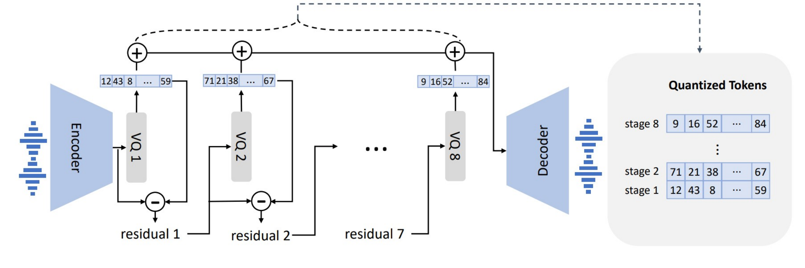
codec LM 架构里，AR 只负责第 1 层，剩下 K−1 层由 NAR 并行/迭代补齐——基本不占自回归步数。 真正决定 LLM 要跑多少步的，只有帧率 f。
同一个骨架，不同取舍
无监督 codec 之间真正在变的是帧率：目标从「压得更小」变成「让 LLM 更好建模」，于是 75 Hz → 12.5 Hz。
| Codec | 提出方 / 年份 | 采样率 | 帧率 | 码本 K × V | 比特率 | 核心特色 |
|---|---|---|---|---|---|---|
| Opus | IETF 2012 | 8–48 kHz | — | 无码本 | 6–24 kbps | 非 neural、不输出 token —— 放这里当对照 |
| SoundStream | Google 2021 | 24 kHz | 75 Hz | 8 × 1024 | 6 kbps | 开山之作：首次把 RVQ + 多尺度 STFT 判别器做 work |
| Encodec | Meta 2022 | 24 / 48 kHz | 75 Hz | 8 × 1024 | 6 kbps | 事实标准：权重开源、工程完整，VALL-E / Bark 底座 |
| DAC | Descript 2023 | 44.1 kHz | 86 Hz | 9 × 1024 | 8 kbps | 音质路线：Snake 激活 + 多一层码本，抑制码本 collapse |
| Mimi | Kyutai 2024 | 24 kHz | 12.5 Hz | 8 × 2048 | 1.1 kbps | 转向点：全因果可流式 + 第 1 层是语义 tokenMoshi 底座 |
| WavTokenizer | 2024 | 24 kHz | 75 Hz | 1 × 4096 | 0.9 kbps | 单码本：上层不必再写 NAR 模型处理跨码本依赖 |
Encodec 是怎么训出来的
无监督 codec 里被抄得最多的一套配方 —— 2023–2024 年 codec-LM TTS 基本都踩在它上面codec 效果对比
全部是实测数据：同一段 24 kHz 原始音频，编码再解码。
有监督 codec 成为新范式
无监督 codec 为了「还原得像」，语义，音色都得记。有监督codec显式只「保留语义」。
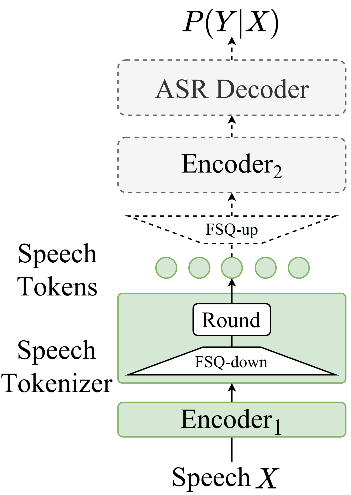
要表示的信息量本身就小，不需要 8 层残差去堆细节 —— 上层也就不用再写一个 NAR 模型补层。
token 本身就是从「识别出文字」这个目标里学出来的，拼进 LM 的序列里很自然，不需要额外对齐模块。
说什么、怎么断句、语调走向。进 LM，参与自回归生成。
音色的全局身份，从参考音频提取（CAM++ / ERes2Net 系）。不进 LM，直接给 CFM。
更细的音色纹理线索，speaker embedding 那一个向量装不下的部分。也直接给 CFM。
VQ换成 FSQ：解决码本坍塌问题
CosyVoice 1 用普通 VQ（单码本 4096），2 换成了 FSQ。换的理由不是精度，是码本利用率。
码本是学出来的。训练早期少数码字先被选中，梯度只更新它们，它们变得更容易被选中 —— 正反馈。 最后大量码字从头到尾没被选中过一次，标称 4096，实际有效可能只有几百。你为词表付了钱，但没拿到货。
VQ
vector quantizationCosyVoice 1FSQ
finite scalar quantizationCosyVoice 2档位是固定的网格，不是学出来的条目 —— 没有「先被选中的更容易被选中」这个正反馈。
没有可学码本，commitment loss 也不需要了，跟着一起消失的还有码本学习率这个难调的旋钮。
6561 个组合基本都用得上，比标称 4096、实际几百的 VQ 划算得多。
码字被限制在规则网格上，不能像 VQ 那样自由摆在 latent 分布密集处。语义 token 信息量小，这个约束吃得下。
为什么这里换得起、Encodec 那边换不起：语义 token 只装内容，一个码本就够，FSQ 那点表达力损失无所谓。 无监督声学 token 要装音色和环境，靠的是 8 层残差堆精度，对每一层的表达力都很敏感。能不能换量化器，取决于你让 token 装多少东西。
不同方案对比
底层的表示建模 和 上层架构设计相互影响。
为了还原得像，音色、环境、录音设备全都得记住，一起打包进 token。
只留内容。音色被主动丢掉，靠 speaker embedding + 参考 Mel 从旁路补回来。
干脆不量化。什么都不丢，也就没有码本利用率、跨码本依赖这些问题。
| 维度 | 无监督声学 tokenVALL-E / Bark / MusicGen | 有监督语义 tokenCosyVoice 2 / 3 | 连续表示F5-TTS / E2-TTS |
|---|---|---|---|
| token 从哪来 | RVQ-VAE codec 自己训 | ASR encoder 中间插量化层 | 没有 token |
| token 里装了什么 | 内容 + 音色 + 环境，全都有 | 只有内容 | 不适用 |
| 码本 K × 帧率 = 每秒 token | 8 × 75 Hz = 600 | 1 × 25 Hz = 25 | — / Mel 帧率 |
| 上层要不要 NAR 补层 | 要，第 2–8 层单独一个模型 | 不要 | 不要 |
| 音色从哪来 | token 里自带（参考音频当 prompt） | speaker embedding + 参考 Mel | 参考 Mel 直接当条件 |
| 流式能力 | 看 codec 是否因果（Encodec 不行、Mimi 行） | 可以，单码本 + chunk-aware causal | 难，总时长要先估出来 |
| 最适合的场景 | 通用音频、音乐、音效 | 语音合成、语音对话 | 极致音质、不需要流式 |
装全部 → 声学 token；只装内容 → 语义 token；干脆不装 → 连续表示。 先决定 token 里放什么，上层架构基本就被定死了。
Flow Matching：不学去噪，直接学速度场
和 Diffusion 目标完全一样 —— 从噪声生成数据。区别只在走什么路径： Diffusion 沿一条曲折的随机路径倒推，Flow Matching 直接连一条直线。直线可以大步走，于是 1000 步变 10–32 步。
每步都要注入随机性再去噪（reverse SDE）。路径抖，步子必须小，否则数值积分会崩。
路径完全确定，没有随机性（ODE）。方向恒定，所以能大步跳 —— 这是 SD3 / Sora / F5-TTS 都换 FM 的原因。
训练
learn the velocity fieldx₁、一份高斯噪声 x₀、一个时刻 t，插值出中间态：推理
integrate along the fieldx₀。长度必须先定 —— 这正是 F5 不能流式的根因。两个常见的推理参数
上一页的 ODE 求解时有两处可以调： 一个决定参考音色贴得多紧，一个决定每一步该走多大。
核心用途：调节生成结果对参考音色的贴合程度。做法是跑两次网络 —— 一次给参考音色条件、一次完全不给 —— 往「参考 − 无参考」的方向外推：
ṽ = vθ(xₜ, t) + β·( vθ(xₜ, t ; Φ) − vθ(xₜ, t) )F5-TTS 默认 β=2.0，CosyVoice 2 论文默认 β=0.7，两家参数化写法一致——数字越大，音色引导越强。
核心用途：把有限的几步 ODE 求解，分配到最需要精度的地方。噪声端（t→0）数据还很粗糙、方向变化剧烈，得小步走才不会一步就偏了；数据端（t→1）已经接近真实分布，粗放地大步走也能收敛：
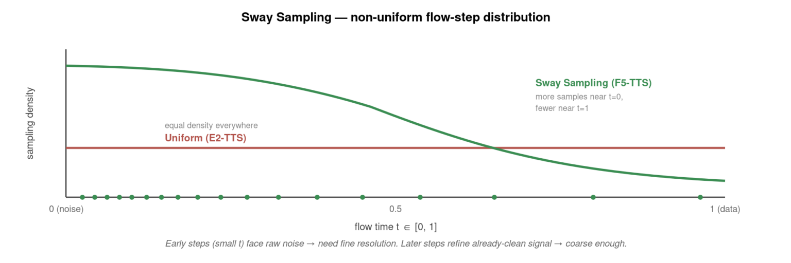
同样 16 步，Sway 有 11 步落在前半段（均匀只有 8 步）。F5 实测 WER 降约 15%、SECS 提升 0.05，且和训练完全无关，任何模型都能直接套用。
F5-TTS 默认两个一起用：nfe_step=16, cfg_strength=2.0, sway_sampling_coef=-1.0。
Sway 可以无脑开（不花钱、不用重训）；CFG 得按场景调 β，且会让推理成本翻倍。
扩散模型架构：以 F5-TTS 为例
前两页讲的是抽象的速度场和采样策略，这一页看一个真实模型的输入长什么样、输出长什么样。
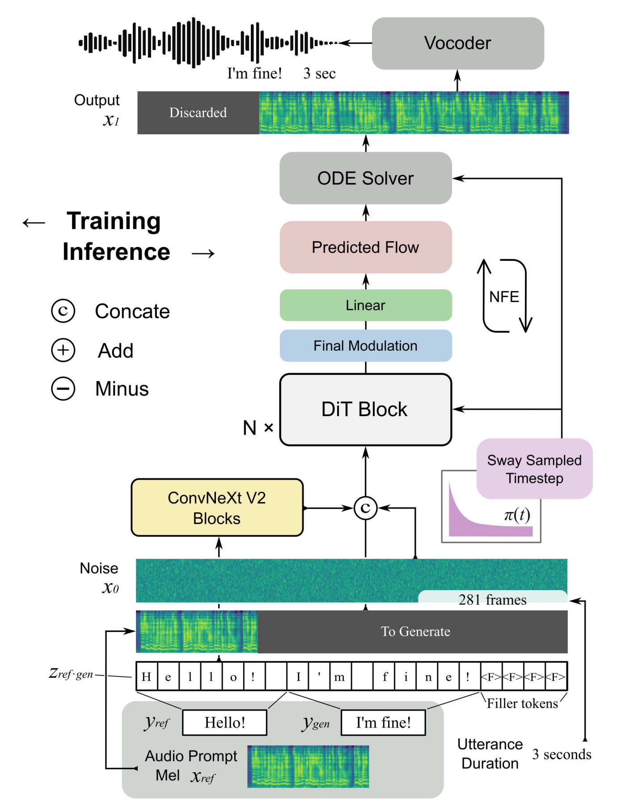
先按参考音频估出目标语音的总帧数（图中 281 frames），把 参考文本 + 目标文本 用 <F> filler token 补齐到这个长度 —— 文本和最终 mel 逐帧对齐，长度必须提前定死，这也是 F5 不能流式的根因。
补齐后的 token 序列过 ConvNeXt V2 Blocks，得到逐帧的文本编码；再和同样逐帧的噪声 x₀、参考 mel x_ref 一起 concat，作为 DiT 每一步的条件输入。
拼好的序列过 N × DiT Block，输出这一步的 Predicted Flow（速度场）；ODE Solver 按 Sway 采样出的时刻反复调用 DiT，一步步把 x₀ 积分到 x₁，最终裁掉 padding 部分，剩下的就是目标 mel，再交给声码器出波形。
声码器：把 Mel 谱还原成能听的波形
前面所有模块的输出都是 Mel 谱，但耳朵只能听波形。这一步不是格式转换 —— Mel 谱是有损压缩的结果，反过来走没有唯一答案，只能让神经网络猜一个听起来合理的。
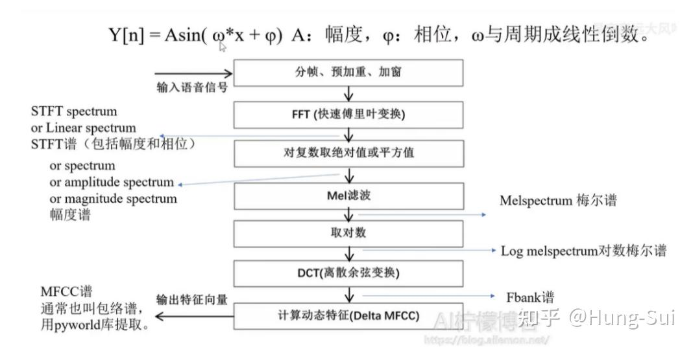
FFT 出来的是复数频谱，每个频点既有幅度又有相位。图中「对复数取绝对值」这一步只保留幅度，相位从数学上直接被丢弃——不是压缩，是删除。 于是同一张 Mel 谱，配上不同的相位能还原出无数条不同的波形，波形 → Mel 谱是一条多对一的单行道。 声码器要做的事，就是用一个模型根据 Mel 谱把相位信息补全，才能还原出听起来合理的原始波形。
分帧做傅里叶
丢掉相位
要走回来
每帧 1026 → 100，压掉 10.3×
相位决定波形长什么样，幅度只决定「各频率有多强」。把同一张 Mel 谱配上不同的相位，能还原出无数条不同的波形 —— 它们的频谱幅度完全一样，波形却对不上。所以声码器的活儿不是「解压」，而是补一个合理的相位。
CosyVoice架构
前面讲的组件在 CosyVoice 2 里全部对得上号：Codec 编码器 → 自回归 LM → Chunk-aware 流匹配 → 声码器。
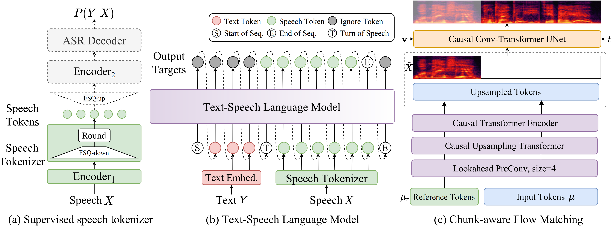
通过序列拼接顺序切换推理模式
非流式和流式用的是同一个 LM——区别只在训练/推理时怎么排列 [S]/[T]/[E] 这几个特殊 token 和文本、语音 token 的顺序。
非流式零样本 (ICL)
non-streaming流式零样本 (ICL)
streaming通过掩码方式切换延迟档位
语音 token 先经过同一套上采样，再喂进同一个 Causal Conv-Transformer UNet。 非流式和流式的分歧只在用哪种因果掩码，网络权重不变。
非流式
offlineṽᵢ = (1+0.7)vᵢ(条件) − 0.7vᵢ(无条件)，欧拉法逐步积分到 X₁。流式
streaming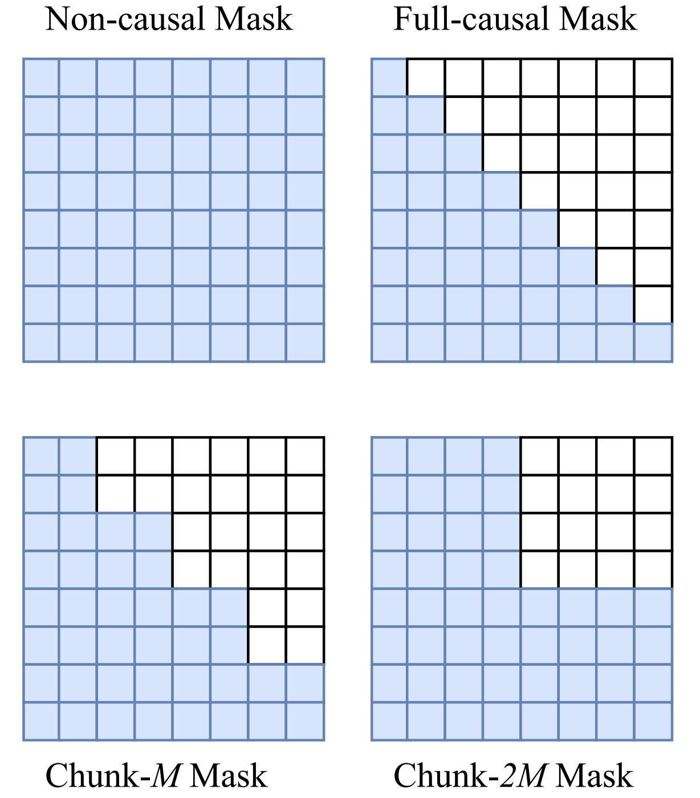